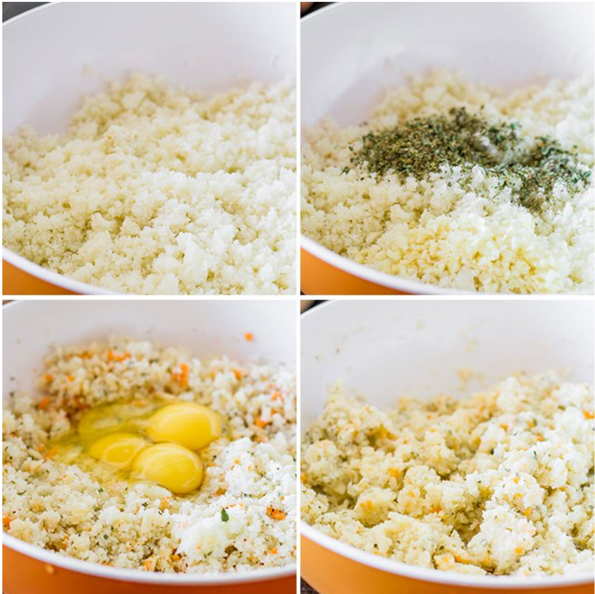
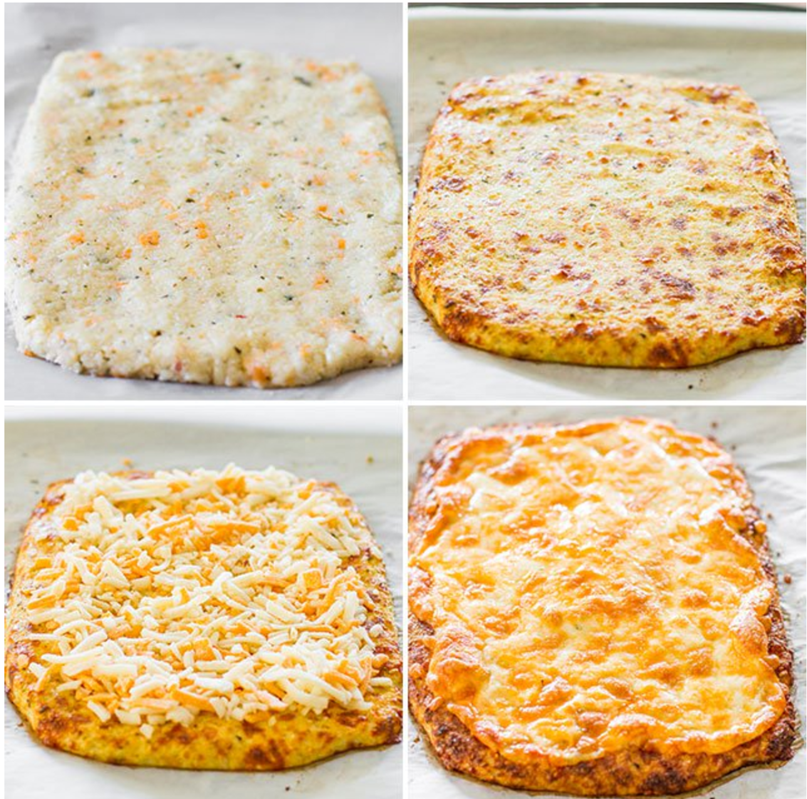

Back
Cauliflower Cheese Breadsticks
Ingredients
- 4 cups riced cauliflower about 1 large head of cauliflower
- 4 eggs
- 2 cups mozzarella cheese I used a Tex Mex blend
- 3 tsp oregano
- 4 cloves garlic minced (feel free to exclude)
- salt and pepper to taste
- 1 cup mozzarella cheese, or more for topping


Instructions
- Preheat oven to 425 F degrees. Prepare 2 pizza dishes or a large baking sheet with parchment paper.
- Make sure your cauliflower is roughly chopped in florets. Add the florets to your food processor and pulse until cauliflower resembles rice.
- Place the cauliflower in a microwavable container and cover with lid. Microwave for 10 minutes. Let the cauliflower cool just until there's no more steam coming from it. Place the microwaved cauliflower in a large bowl and add the eggs, 2 cups of mozzarella, oregano, garlic, salt and pepper. Mix everything together.
- Separate the mixture in two and place each half onto the prepared baking sheets and shape into either a pizza crust, or a rectangular shape for the breadsticks.
- Bake the crust (no topping yet) for about 25 minutes or until nice and golden. Don't be afraid the crust is not soggy at all. Once golden, sprinkle with remaining mozzarella cheese and put back in the oven for another 5 minutes or until cheese has melted.
- Slice and serve.
Source